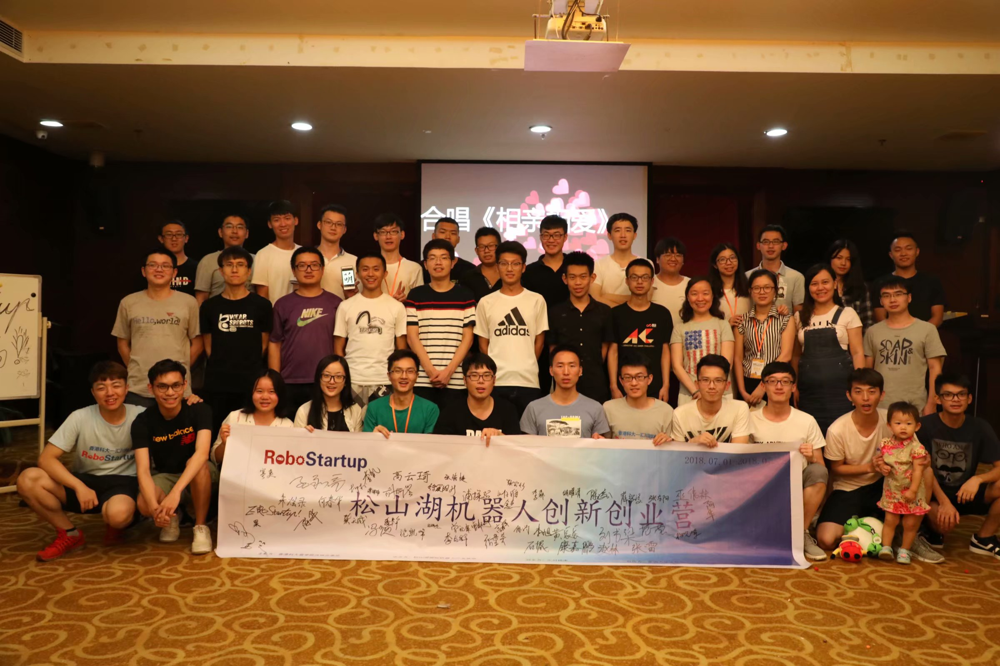

|
UR5 Follow Project
Sen Li, and Ying Wu.
Jet Power & Humanoid Robotics Lab, GDUT, 2019
Brief Description: The least square algorithm is used to cooperate with the motion capture system to complete the following motion of the dual robotic arms.
|
|

|
Coordinate Measuring Machine (CMM) Project
Sen Li, Na Fan, Yang Zhang, and Di Zhang.
Robotics Institute, HKUST, 2019
Brief Description: This project is to realize the precise positioning and process-ing of the workpiece. Given a template file or coarse position of the workpiece, the CMM could output the precise measuraments of the workpiece by sampling point clouds automatically generated on the workpiece’s surface.
Responsibilities: Design algorithms to automatically generate measurement path on the surface of the workpiece by collected a few sampling data. The measurement was performed with errors less than 2 μ.
|
|

|
Research on algorithm of cooperative work of Dual Six-Axis Manipulator
Sen Li, Ying Wu, Junxiang Lin, and Hong Wang.
Xbotpark, 2018-2019
Brief Description: Designed an algorithm of how the slave manipulator follows the master manipulator and how the slave manipulator independently performs trajectory overlay.
Responsibilities: Completed the simulation of position and attitude planning algorithms, and design the trajectory tracking and trajectory overlay algorithm.
Video
|
|
 |
HKUST One Million Dollar
Sen Li.
Organizer: HKUST & Shenzhen Inovance Technology Co., Ltd, 2018
Brief Description: Robotics startups – Ten entrepreneurial teams from 30 renowned institutions, came to Beijing to present their projects and roadshows.
Responsibilities: Discussed and determined the course schedule with YUAN Ye, LIU Jun and LIU Song, assisted professors in giving lessons, led visits to well-known companies (DJI, Inovance Technology), helped students complete prototype designs and advance their projects.
|
|

|
Rock–Paper–Scissors based on vision
Sen Li.
Xbotpark, 2018
Brief Description: Dynamic gesture tracking and recognition program that recognizes opponent’s hand gestures in the "rock-paper-scissors" games based on image classification technique, and instantly responds to defeat human players.
Report | Video
|
|

|
Gesture Control of Moving Chassis
Sen Li, Leo Wang, Junxiang Lin and Ying Wu.
Xbotpark, 2018
Brief Description: Using a customized data glove controls the Mecanum wheel cart moves in all directions by gesture.
Responsibilities: Implemented the chassis program development, including driving the chassis and decoding the remote control.
Video
|
|
|
ROBOCON
RoboticsAcademy, GDUT, 2016-2017
Brief Description: Two robots on top of the previous badminton robot were designed for two consequetive National University Robot Competitions , “Clean energy recharging the world” and “Asobi: the landing disc", to further polish my engineering skills.
Responsibilities: Participated in the design of badminton robot, clean energy robots, frisbee robot, and serve as the operator of the badminton robot. Mainly responsible for the control of the chassis of the mecanum wheel and the control of the launcher.
Video
|
|
|
Self-stabilization of Quadrotor
GDUT, 2016
Brief Description: Use open source flight control with only IMU to drive the quadcopter and achieve self-stabilization.
Website
|
|

|
Auto-tracking
RoboticsAcademy, GDUT, 2015
Brief Description: The circuit design was designed using the NAND gate and simplified by K-map.
Report
|
|